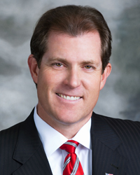
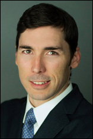

Our Attorneys
As a top law firm in NYC, our team of personal injury attorneys shares over 30 years of experience in claiming settlements for victims of landlord negligence, inadequate security, nursing home abuse, construction accidents, lead poisoning cases, police brutality, car accidents, motorcycle accidents and more in the greater New York City area.
Attorney Profiles:
- Mark E. Weinberger
- Marc J Musman
- Larry J Bonchonsky
- Samantha Fried
Mark E. Weinberger
“Every Lawyer in my firm & I have obtained impressive results for our clients. We all put our clients first and appreciate the importance of each case. I am proud of our accomplishments for them”
When it comes to exposing negligent conditions and proving damages, Mark E. Weinberger is the top personal injury attorney to hire. Mark is the ideal personal injury lawyer who can dutifully file legal complaints, argue cases in court, draft legal documents, and offer legal advice with a genuine concern for the well-being of his clients.
30 years of legal experience
With over 30 years of legal experience, Mark’s knowledge and experience allow him to correctly evaluate his clients’ cases, identify the distinct legal issues involved, and extensively research every issue to build a strong case. When dealing with clients, Attorney Weinberger adheres to strict standards of legal ethics. He understands his clients’ dilemmas and treats their sensitive personal information with utmost confidentiality.
A Consistent Winning Legal Record in New York
In the 30 years Attorney Weinberger has been practicing personal injury law, he has successfully represented thousands of clients and fought to obtain the settlements or verdicts their injuries deserved. In 2008 alone, he has recovered over $10,000,000 for his clients. All of this expertise is combined with compassion for those whose rights have been compromised or violated.
Legal Education
A Graduate of Pepperdine Law School, Mark E. Weinberger became a sought after personal injury attorney after being the Assistant Counsel to the N.Y. State Democratic Conference from 1981-1986. Starting as a small practice in Great Neck, NY in 1987, his practice has grown and moved to Rockville Center where it has become one of the top personal injury lawyers on Long Island.
Practicing Personal Injury Law in New York City, Long Island, Suffolk & Nassau Counties
Mark E. Weinberger has fought to protect the rights of the injured in all 5 boroughs of New York City as well as on Long Island, Suffolk County and Nassau County in lawsuits against the city and state of New York and its municipalities. Negligent landlords, construction site operators, corporations, dangerous drivers and their insurance companies must understand the true costs of their negligence or misconduct. Only then will these conditions be corrected.
Marc J. Musman
“My clients’ lives have been de-railed by someone’s negligence. Our job is to get them the justice & compensation they deserve to help get them back on track.” – Marc J. Musman
“My clients’ lives have been de-railed by someone’s negligence. Our job is to get them the justice & compensation they deserve to help get them back on track.” – Marc J. Musman
Marc is a personal injury attorney at Long Island law firm of Mark E. Weinberger. While most personal injury lawyers’ experience is limited to providing legal representation to those who claim to have been injured as a result of the negligence or wrongdoing of another person, company or government agency, Attorney Musman has the impressive distinction of having practiced negligence defense as well when he used to work with a leading negligence defense firm in New York City.
Considering Personal Injury from Both Sides of Prosecution and Defense
“Understanding the law from both sides is a definite advantage. The strategy for success is set before we go to court. Meticulous preparation, attention to detail, and the desire & ability to fight for our client’s rights is our formula. We get the best results because the other side knows we do not prepare to settle, but to win at trial.” – Marc J. Musman “A million dollar verdict won’t make a personal injury victim well again, but our winning that verdict can ensure that they can have the best possible quality of life.” – Marc J. Musman
Legal Education
Marc Musman is an alumnus of State University of New York at Albany – class of ’89. He then continued to New York Law School – class of ‘94. He is in charge of all substantive motions and preserving the firm’s verdicts when appealed by the defense. He also excels at appealing wrongful decisions adverse to our clients.
Areas of Pracitce
Marc is an authority on car accidents, lead poisoning and premises liability. Marc Musman has argued cases before the civil and supreme courts and appellate divisions in NYC. His remarkable skills in advocacy, oral arguments, client counseling and legal advising have all been instrumental in recovering millions of dollars in damages for the injured. If you or a loved one is suffering injuries that resulted from another’s negligence or wrongdoing, place your trust in someone who is all about results. Get Marc J. Musman as your personal injury lawyer.
Larry J. Bonchonsky
“When you have your day in Court it is essential to have expert trial counsel and someone who can act decisively to protect your best interests.” – Larry J. Bonchonsky
Legal Education
Larry Bonchonsky completed his undergraduate studies at the State University of New York at Albany in 1976. He graduated from the Columbus School of Law at The Catholic University of America, Washington D.C. in 1979 and is admitted to practice in New York and Washington D.C.
Areas of Practice
Larry Bonchonsky specializes in representing claims of personal injury victims in all types of accidents such as slip and falls, auto accidents and construction accidents. In court, there is no margin for error when every word and action may either make or break your case. With so much at stake, you have no choice but to put your fate in the hands of a trustworthy lawyer who knows you and the law like the back of his hand. With over 20 years of courtroom experience, Larry Bonchonsky the lawyer for you. He is dedicated to obtaining justice for you and all his clients. Larry is an important part of the Mark E. Weinberger legal team and would love to discuss your case today.
Larry can be contacted via email at lbonchonsky@mewlaw.net.
Samantha Fried
“I approach each case with a high level of energy, enthusiasm and dedication. My ultimate goal is to represent each client to the utmost of my ability and obtain the best possible outcome and result. On every case I try to ensure that each client is adequately compensated for the pain and suffering they have endured as the result of some else’s negligence.” – Samantha Fried
Legal Education
Samantha Fried graduated from the University of Maryland with a degree in Political Science and a minor in Spanish and went on to earn a J.D. degree from the Jacob D. Fuchsberg Law Center at Touro College in 1993. While there, she was a member of the Touro Law Review and held the position of Research Editor.
Legal Admissions
Samantha is admitted to practice law in New York and New Jersey State Courts, as well as Federal Courts in the Southern and Eastern Districts of New York.
In 2001, Samantha Fried joined the Law Office of Mark E. Weinberger, P.C., as an Associate Attorney. As an Associate, she is responsible for many aspects of each case she handles. Attorney Fried works closely with her clients throughout the litigation process.
Samantha Fried is proud of the work she does and is a member of the New York State Bar Association as well as The New York State Academy of Trial Lawyers.
- Case negotiations
- Settlements
- Arbitrations
- Depositions
- Motion Practice
- Client contact
- Court appearence
If you are experiencing pain or suffering caused by the negligence of others, Attorney Samantha Fried is the lawyer to help you obtain adequate compensation.
Samantha can be contacted via email at sfried@mewlaw.net.